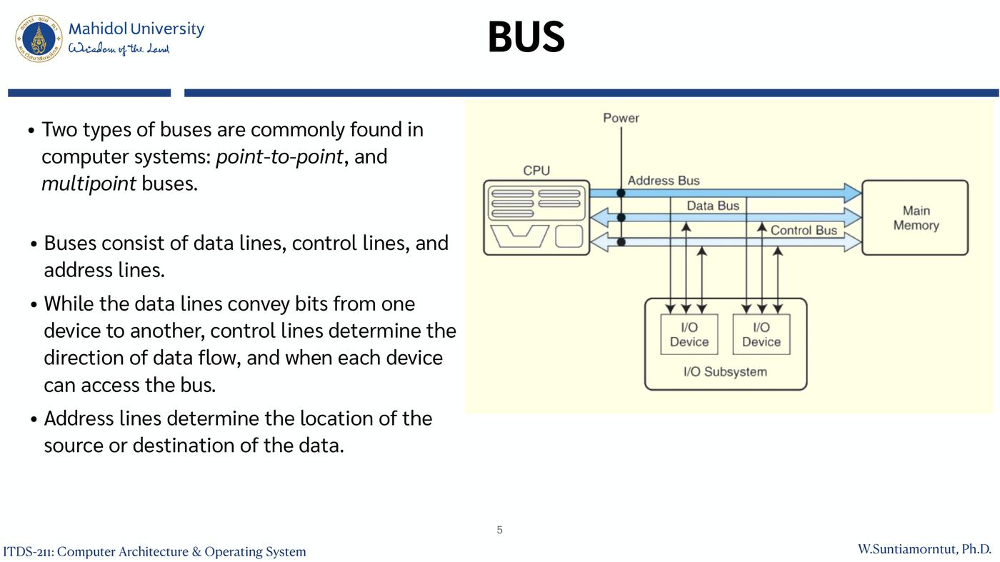
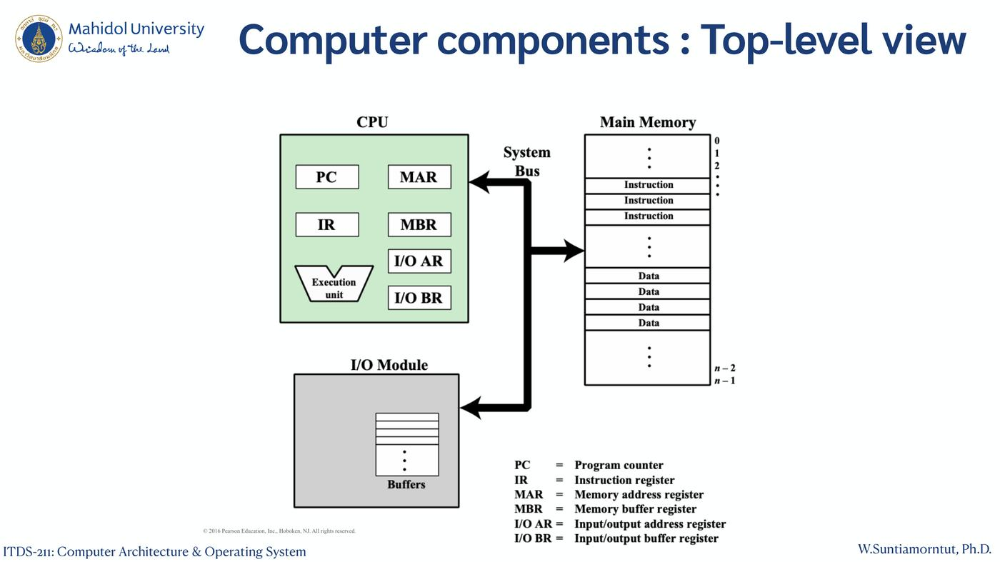
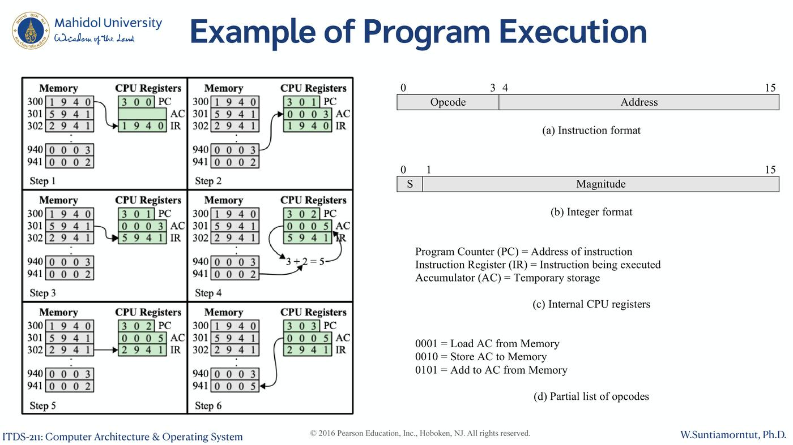
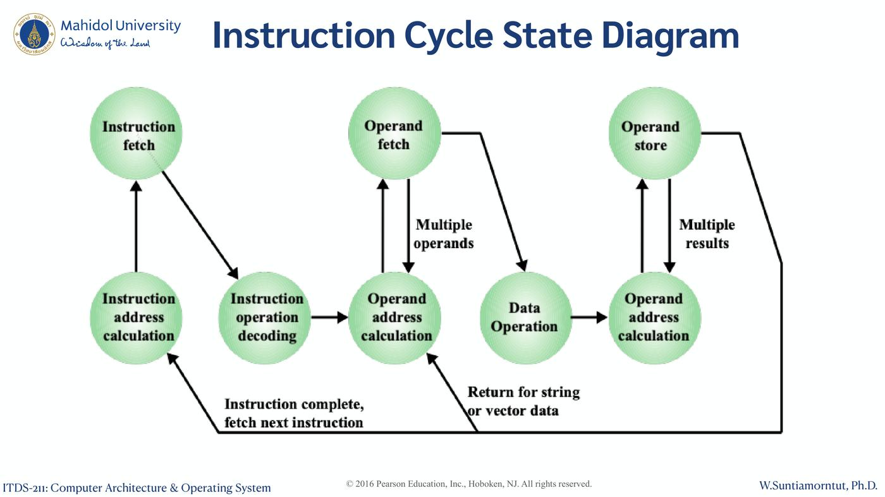
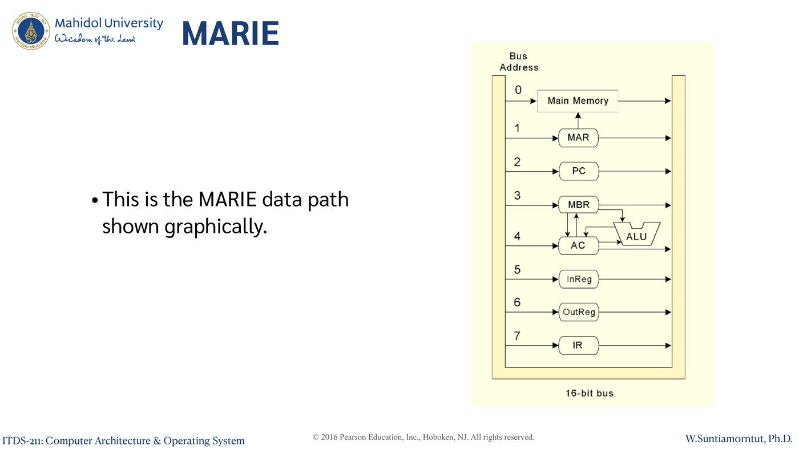
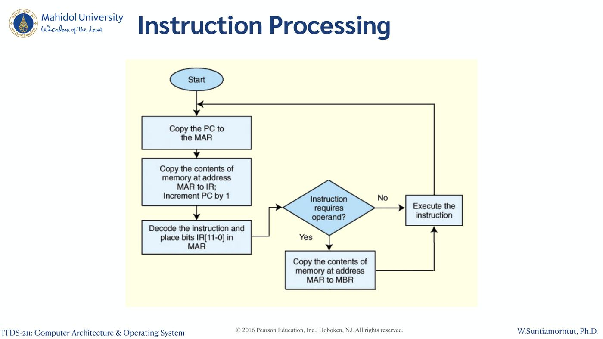
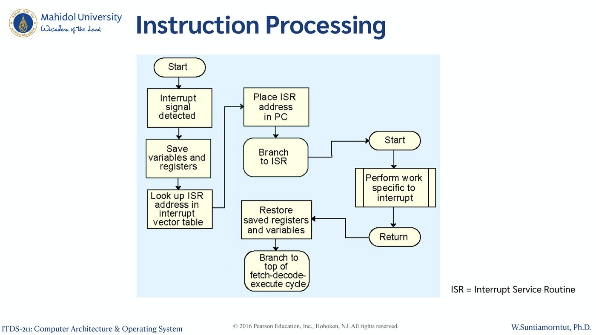
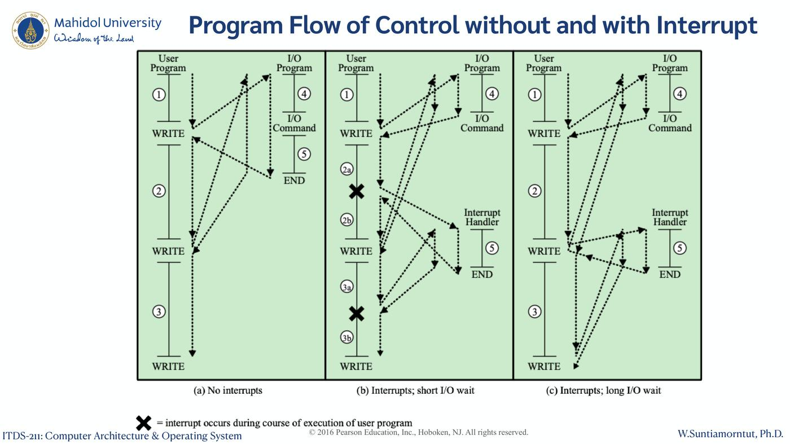
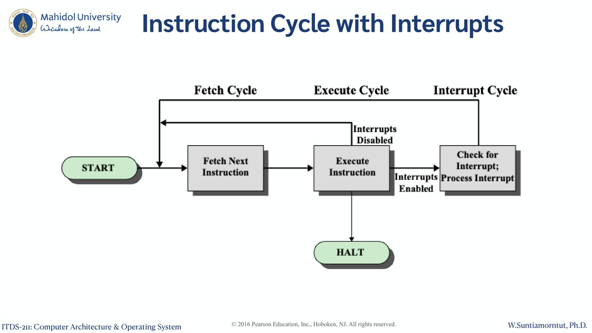
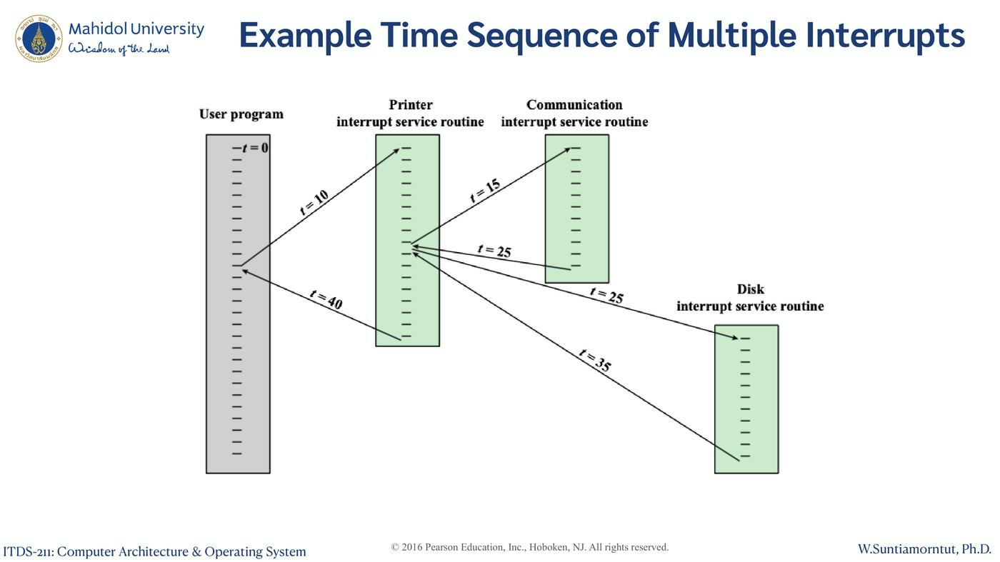

ภาพรวมบทนี้: ต่อจาก Chapter 1 ที่รู้จักส่วนประกอบแล้ว บทนี้ดูว่าส่วนประกอบเหล่านั้น ต่อกันอย่างไร (Von Neumann vs Harvard, bus) และ ทำงานอย่างไร (instruction cycle: fetch → execute)
ใช้เครื่องจำลองอย่างง่ายชื่อ MARIE อธิบาย register, คำสั่ง 9 ตัวพื้นฐาน, RTL และการไล่ค่า register ทีละขั้น
ปิดท้ายด้วย interrupt: ประเภท, การจัดการด้วย ISR, maskable/nonmaskable และผลต่อเวลาเมื่อรอ I/O
1. Von Neumann vs Harvard Computer Model (สไลด์ 3–4)
1.1 Von Neumann Computer Model (สไลด์ 3)
โดย John Von Neumann, Institute for Advanced Studies, Princeton
- เป็นโมเดลคอมพิวเตอร์ที่ ดั้งเดิมและพบบ่อยที่สุด
- ใช้แนวคิด stored program concept:
- Memory เก็บทั้ง program และ data
- Memory ถูกอ้างถึงด้วย หมายเลขตำแหน่ง (address) ไม่ใช่ตามชนิดของข้อมูลข้างใน
- การทำงานและการเข้าถึง memory เป็นแบบ ทีละขั้นตามลำดับ (sequential/linear)
- ภาพ: Input Device → CPU (Control Unit, Arithmetic/Logic Unit) ↔ Memory Unit → Output Device
1.2 Harvard Computer Model (สไลด์ 4)
- ใช้ใน DSPs และ microcontrollers
- แยก memory และ bus ของ instructions กับ data ออกจากกัน
- ลด bottleneck แต่เพิ่มความซับซ้อน
- บางระบบใช้แบบ hybrid: แบบ Harvard ที่ระดับ L1 cache แต่แบบ Von Neumann ที่ระดับ main memory
- ภาพ: Control unit อยู่ตรงกลาง เชื่อมกับ Instructions memory, Data memory, ALU และ I/O
| Von Neumann | Harvard | |
|---|---|---|
| Memory | ที่เดียวเก็บทั้ง program และ data | แยก instruction memory กับ data memory |
| Bus | ใช้ร่วมกัน | แยกกัน |
| ข้อดี/ข้อเสีย (ตามสไลด์) | ดั้งเดิมและพบมากที่สุด | ลด bottleneck แต่ซับซ้อนกว่า |
| ใช้ที่ | — | DSPs, microcontrollers |
⚠️ แบบ hybrid: L1 cache = Harvard, main memory = Von Neumann อย่าสลับกัน
2. BUS (สไลด์ 5–7)
2.1 พื้นฐาน (สไลด์ 5)
- Bus ที่พบบ่อยมี 2 ประเภท: point-to-point และ multipoint
- Bus ประกอบด้วย 3 กลุ่มเส้น:
| เส้น | หน้าที่ |
|---|---|
| Data lines | ส่ง bits จากอุปกรณ์หนึ่งไปอีกอุปกรณ์ |
| Control lines | กำหนด ทิศทาง ของข้อมูล และ เมื่อไร แต่ละอุปกรณ์ใช้ bus ได้ |
| Address lines | กำหนด ตำแหน่ง ต้นทางหรือปลายทางของข้อมูล |
ภาพ: CPU ต่อกับ Main Memory และ I/O Subsystem (I/O Devices) ผ่าน Address Bus, Data Bus, Control Bus และมีเส้น Power

2.2 Multipoint Bus (สไลด์ 6)
- Multipoint bus เป็น ทรัพยากรที่ใช้ร่วมกัน จึงต้องควบคุมการเข้าถึงด้วย protocols ที่ฝังอยู่ใน hardware
- ภาพ: CPU, Memory, Disk Controller (ต่อกับ Disk), Disk Controller (ต่อกับ Monitor) ต่อบน bus เส้นเดียวกัน
2.3 Bus Arbitration (สไลด์ 7)
ใน master-slave configuration ที่มีอุปกรณ์มากกว่าหนึ่งตัวเป็น bus master ได้ คำขอเป็น master ที่มาพร้อมกันต้องถูก arbitrate (ตัดสิน)
4 ประเภทของ bus arbitration:
| ประเภท | วิธีการ |
|---|---|
| Daisy chain | ส่งต่อสิทธิ์จากอุปกรณ์ priority สูงสุดไปต่ำสุด |
| Centralized parallel | ทุกอุปกรณ์ต่อตรงกับ arbitration circuit |
| Distributed using self-detection | อุปกรณ์ตกลงกันเองว่าใครได้ bus |
| Distributed using collision-detection | อุปกรณ์ไหนก็ลองใช้ bus ได้ ถ้าข้อมูลชนกับของอุปกรณ์อื่นก็ลองใหม่ |
💡 เปรียบ daisy chain เหมือนส่งไมค์ต่อกันจากคนสำคัญที่สุดไปคนสำคัญน้อยสุด
3. Hardware and Software Approaches (สไลด์ 8–9)
| (a) Programming in hardware | (b) Programming in software | |
|---|---|---|
| ภาพ | Data → Sequence of arithmetic and logic functions → Results | Instruction codes → Instruction interpreter → Control signals → General-purpose arithmetic and logic functions (รับ Data) → Results |
Software (สไลด์ 9):
- คือลำดับของ codes หรือ instructions
- ส่วนหนึ่งของ hardware ตีความแต่ละคำสั่ง แล้วสร้าง control signals
- โปรแกรมใหม่ = ให้ลำดับ code ชุดใหม่ แทนการเดินสาย hardware ใหม่
Major components:
- CPU = Instruction interpreter + โมดูล general-purpose arithmetic and logic functions
- I/O components
- มีส่วนประกอบพื้นฐานสำหรับรับ data และ instructions แล้วแปลงเป็นสัญญาณที่ระบบใช้ได้
- มีช่องทางรายงานผลลัพธ์
4. Registers สำหรับ Memory และ I/O (สไลด์ 10–11)
| Register | หน้าที่ |
|---|---|
| MAR (Memory address register) | ระบุ address ใน memory สำหรับการ read หรือ write ครั้งถัดไป |
| MBR (Memory buffer register) | เก็บข้อมูลที่จะเขียนลง memory หรือรับข้อมูลที่อ่านมาจาก memory |
| I/OAR (I/O address register) | ระบุ I/O device ตัวใดตัวหนึ่ง |
| I/OBR (I/O buffer register) | ใช้แลกเปลี่ยนข้อมูลระหว่าง I/O module กับ CPU |
Computer components: Top-level view (สไลด์ 11)
- CPU มี PC, IR, MAR, MBR, I/O AR, I/O BR และ Execution unit
- Main Memory มีตำแหน่ง 0 ถึง n−1 เก็บทั้ง Instruction และ Data
- I/O Module มี Buffers
- ทั้งหมดเชื่อมกันด้วย System Bus

💡 MAR = "ที่อยู่", MBR = "ของ" — MAR บอกว่าจะไปช่องไหน MBR ถือข้อมูลที่ขนเข้า/ออก
5. Computer Function (สไลด์ 12–13)
5.1 Basic Instruction Cycle (สไลด์ 12)
START → Fetch Next Instruction (Fetch Cycle) → Execute Instruction (Execute Cycle) → วนกลับไป fetch → ... → HALT
5.2 Fetch Cycle (สไลด์ 13)
- ตอนเริ่มแต่ละ instruction cycle processor fetch คำสั่งจาก memory
- PC เก็บ address ของคำสั่งที่จะ fetch ถัดไป
- Processor เพิ่มค่า PC หลัง fetch ทุกครั้ง เพื่อจะได้ fetch คำสั่งถัดไปตามลำดับ
- คำสั่งที่ fetch มาถูกโหลดเข้า IR
- Processor ตีความคำสั่ง แล้วทำ action ที่ต้องทำ
6. Example of Program Execution (สไลด์ 14)
รูปแบบที่ใช้ในตัวอย่าง:
- (a) Instruction format 16 bits: Opcode (bit 0–3) + Address (bit 4–15)
- (b) Integer format: S (bit 0) + Magnitude (bit 1–15)
- (c) Internal CPU registers: PC = address ของคำสั่ง, IR = คำสั่งที่กำลังทำ, AC (Accumulator) = ที่เก็บชั่วคราว
- (d) Opcodes บางส่วน: 0001 = Load AC from Memory, 0010 = Store AC to Memory, 0101 = Add to AC from Memory
โปรแกรมใน memory: 300: 1940, 301: 5941, 302: 2941 | ข้อมูล: 940: 0003, 941: 0002
| Step | เกิดอะไรขึ้น | PC | AC | IR |
|---|---|---|---|---|
| 1 | Fetch คำสั่งที่ 300 (1940) เข้า IR | 300 | — | 1940 |
| 2 | Execute: Load ค่าจาก 940 (0003) เข้า AC, PC เพิ่มเป็น 301 | 301 | 0003 | 1940 |
| 3 | Fetch คำสั่งที่ 301 (5941) เข้า IR | 301 | 0003 | 5941 |
| 4 | Execute: Add ค่าจาก 941 (0002) เข้า AC → 3 + 2 = 5, PC เป็น 302 | 302 | 0005 | 5941 |
| 5 | Fetch คำสั่งที่ 302 (2941) เข้า IR | 302 | 0005 | 2941 |
| 6 | Execute: Store AC (0005) ลง 941, PC เป็น 303 | 303 | 0005 | 2941 |
ผลลัพธ์: ตำแหน่ง 941 เปลี่ยนจาก 0002 เป็น 0005

💡 อ่านคำสั่ง 4 หลักแบบ hex: หลักแรก = opcode, 3 หลักหลัง = address เช่น 1940 = Load จาก 940
7. Instruction Cycle State Diagram (สไลด์ 15)
สถานะในวงจรคำสั่ง:
- Instruction address calculation
- Instruction fetch
- Instruction operation decoding
- Operand address calculation ↔ Operand fetch (วนได้ถ้ามี multiple operands)
- Data Operation
- Operand address calculation ↔ Operand store (วนได้ถ้ามี multiple results)
- กลับไปข้อ 1 (Instruction complete, fetch next instruction) หรือกลับไป Operand address calculation (Return for string or vector data)

8. MARIE — Simple Computer (สไลด์ 16–27)
8.1 Registers ของ MARIE (7 ตัว) (สไลด์ 17)
| Register | ขนาด | หน้าที่ |
|---|---|---|
| AC (Accumulator) | 16-bit | เก็บ conditional operator (เช่น "less than") หรือ operand ตัวหนึ่งของคำสั่งที่มี 2 operand |
| MAR (Memory address register) | 12-bit | เก็บ memory address ของคำสั่ง หรือของ operand |
| MBR (Memory buffer register) | 16-bit | เก็บข้อมูลหลังดึงจาก memory หรือก่อนเขียนลง memory |
| PC (Program counter) | 12-bit | เก็บ address ของคำสั่งถัดไปที่จะทำ |
| IR (Instruction register) | — | เก็บคำสั่งที่กำลังจะถูก execute |
| InREG (Input register) | 8-bit | เก็บข้อมูลที่อ่านจาก input device |
| OutREG (Output register) | 8-bit | เก็บข้อมูลที่พร้อมส่งไป output device |
8.2 MARIE Architecture (สไลด์ 18)
- CPU มี ALU (มี AC), MBR, MAR, InReg, OutReg และ Control Unit (มี PC, IR)
- Main Memory มี address 0 ถึง 4095
8.3 การเชื่อมต่อและ data path (สไลด์ 19–20)
- Registers เชื่อมกัน และเชื่อมกับ main memory ผ่าน common data bus
- อุปกรณ์แต่ละตัวบน bus มี หมายเลขเฉพาะ ซึ่งถูกตั้งบน control lines เมื่อต้องการให้อุปกรณ์นั้นทำงาน
- มี ทางเชื่อมแยก ระหว่าง AC กับ MBR และระหว่าง ALU กับ AC และ MBR → ส่งข้อมูลระหว่างกันได้ โดยไม่ต้องใช้ main data bus
- Data path (สไลด์ 20) เป็น 16-bit bus หมายเลขบน bus: 0 = Main Memory, 1 = MAR, 2 = PC, 3 = MBR, 4 = AC, 5 = InReg, 6 = OutReg, 7 = IR

8.4 MARIE ISA (สไลด์ 21–22)
- ISA กำหนดรูปแบบคำสั่งและ operation พื้นฐานที่เครื่องทำได้
- ISA เป็น interface ระหว่าง hardware กับ software
- บาง ISA มีคำสั่งหลายร้อยคำสั่ง แต่ MARIE ISA มีแค่ 13 คำสั่ง
- รูปแบบคำสั่ง: Opcode = bit 15–12, Address = bit 11–0
คำสั่งพื้นฐานของ MARIE (ตามตารางในสไลด์):
| Binary | Hex | Instruction | ความหมาย |
|---|---|---|---|
| 0001 | 1 | Load X | โหลดค่าที่ address X เข้า AC |
| 0010 | 2 | Store X | เก็บค่าใน AC ลงที่ address X |
| 0011 | 3 | Add X | บวกค่าที่ address X เข้ากับ AC |
| 0100 | 4 | Subt X | ลบค่าที่ address X ออกจาก AC |
| 0101 | 5 | Input | รับค่าจาก keyboard เข้า AC |
| 0110 | 6 | Output | แสดงค่าใน AC ออกจอ |
| 0111 | 7 | Halt | จบโปรแกรม |
| 1000 | 8 | Skipcond | ข้ามคำสั่งถัดไปตามเงื่อนไข |
| 1001 | 9 | Jump X | โหลดค่า X เข้า PC |
⚠️ สไลด์บอกว่า MARIE มี 13 คำสั่ง แต่ตาราง "fundamental instructions" แสดงไว้ 9 คำสั่ง
⚠️ opcode ในตัวอย่างข้อ 6 (Add = 0101) ไม่เหมือน ของ MARIE (Add = 0011, 0101 = Input) — เป็นคนละเครื่องตัวอย่าง
8.5 Bit pattern ใน IR (สไลด์ 23–24)
- LOAD:
0001 000000000011→ opcode = 1, address ที่จะโหลดข้อมูล = 3 - SKIPCOND:
1000 100000000000→ opcode = 8, bit 11 และ 10 = 10 หมายความว่าจะข้ามคำสั่งถัดไปถ้าค่าใน AC มากกว่าศูนย์
8.6 Microoperations และ RTL (สไลด์ 25–27)
- แต่ละคำสั่งประกอบด้วยคำสั่งย่อยเรียงกัน เรียกว่า microoperations
- ลำดับ microoperations ระบุได้ด้วย register transfer language (RTL)
- สัญลักษณ์ใน MARIE RTL: M[X] = ค่าจริงในตำแหน่ง memory X | ← = การโอน bytes ไปยัง register หรือ memory
LOAD X: ADD X:
MAR ← X MAR ← X
MBR ← M[MAR] MBR ← M[MAR]
AC ← MBR AC ← AC + MBR
SKIPCOND (สไลด์บอกว่าเป็น RTL ที่ซับซ้อนที่สุด):
If IR[11-10] = 00 then
If AC < 0 then PC ← PC + 1
else If IR[11-10] = 01 then
If AC = 0 then PC ← PC + 1
else If IR[11-10] = 11 then
If AC > 0 then PC ← PC + 1
⚠️ สไลด์ขัดกันเอง: สไลด์ 24 บอกว่า bits 11–10 = 10 คือ "skip ถ้า AC > 0" แต่ RTL ในสไลด์ 27 เขียนเงื่อนไข AC > 0 เป็น 11 — ควรถามอาจารย์ว่าจะใช้ค่าไหนตอนสอบ
9. Instruction Processing (สไลด์ 28–29)
Fetch-decode-execute cycle คือชุดขั้นตอนที่คอมพิวเตอร์ทำเมื่อรันโปรแกรม:
- Fetch คำสั่งจาก memory แล้ววางใน IR
- เมื่ออยู่ใน IR แล้ว ก็ decode เพื่อรู้ว่าต้องทำอะไร
- ถ้าต้องใช้ค่าจาก memory (operand) ก็ดึงมาวางใน MBR
- เมื่อทุกอย่างพร้อม ก็ execute
Flowchart (สไลด์ 29):
- Copy the PC to the MAR
- Copy the contents of memory at address MAR to IR; Increment PC by 1
- Decode the instruction and place bits IR[11-0] in MAR
- Instruction requires operand?
- Yes → Copy the contents of memory at address MAR to MBR → Execute
- No → Execute the instruction
- วนกลับไปข้อ 1

10. Interrupts (สไลด์ 30–34)
10.1 Interrupt เกิดเมื่อไร (สไลด์ 30)
ทุกคอมพิวเตอร์มีวิธีขัดจังหวะ fetch-decode-execute cycle โดย interrupt เกิดเมื่อ:
- ผู้ใช้สั่ง break (เช่น Control + C)
- ผู้ใช้หรือโปรแกรมร้องขอ I/O
- เกิด critical error
Interrupt เกิดได้จาก:
- Hardware interrupt
- Software interrupt (software เรียกใช้งาน OS system call)
10.2 เพิ่มขั้นตอน interrupt เข้าใน cycle (สไลด์ 31)
ก่อนแต่ละรอบ ตรวจว่า "Has an interrupt been issued?"
- Yes → Process the interrupt
- No → Perform fetch-decode-execute cycle แล้ววนกลับมาตรวจใหม่
10.3 ขั้นตอนจัดการ interrupt (สไลด์ 32)
ISR = Interrupt Service Routine
- Interrupt signal detected
- Save variables and registers
- Look up ISR address in interrupt vector table
- Place ISR address in PC
- Branch to ISR → ISR: Start → Perform work specific to interrupt → Return
- Restore saved registers and variables
- Branch to top of fetch-decode-execute cycle

10.4 Maskable vs Nonmaskable (สไลด์ 33)
- ในระบบทั่วไป มักจะ ปิด interrupts ทั้งหมด ขณะกำลังจัดการ interrupt หนึ่งอยู่ โดยปกติทำได้ด้วยการ ตั้ง bit ใน flags register
- Interrupt ที่ถูกเพิกเฉยในกรณีนี้เรียกว่า maskable
- Nonmaskable คือ interrupt ที่ ต้องถูกจัดการ เพื่อรักษาให้ระบบอยู่ในสภาพเสถียร
10.5 MARIE กับ I/O (สไลด์ 34)
- Interrupts มีประโยชน์มากในการทำ I/O
- แต่ interrupt-driven I/O ซับซ้อน และอยู่นอกขอบเขตที่คุยตอนนี้
- MARIE ใช้ programmed I/O แบบดัดแปลง
- output ทั้งหมดวางไว้ใน OutREG
- CPU poll InREG ไปเรื่อย ๆ จนกว่าจะมี input แล้วจึง copy ค่าเข้า AC
11. A Simple Program (สไลด์ 35–36)
โปรแกรม MARIE ที่ address 100–106 (hex):
| Address | Instruction | Binary | Hex |
|---|---|---|---|
| 100 | Load 104 | 0001000100000100 | 1104 |
| 101 | Add 105 | 0011000100000101 | 3105 |
| 102 | Store 106 | 0100000100000110 | 4106 |
| 103 | Halt | 0111000000000000 | 7000 |
| 104 | 0023 | 0000000000100011 | 0023 |
| 105 | FFE9 | 1111111111101001 | FFE9 |
| 106 | 0000 | 0000000000000000 | 0000 |
⚠️ ในตารางสไลด์ Store 106 เข้ารหัสเป็น 4106 (opcode 4) แต่ตารางคำสั่งในสไลด์ 22 ให้ Store = 2 และ 4 = Subt — ตารางในสไลด์ไม่ตรงกัน
ไล่คำสั่งที่สอง ADD 105 (สไลด์ 36):
| Step | RTN | PC | IR | MAR | MBR | AC |
|---|---|---|---|---|---|---|
| (initial values) | 101 | 1104 | 104 | 0023 | 0023 | |
| Fetch | MAR ← PC | 101 | 1104 | 101 | 0023 | 0023 |
| IR ← M[MAR] | 101 | 3105 | 101 | 0023 | 0023 | |
| PC ← PC + 1 | 102 | 3105 | 101 | 0023 | 0023 | |
| Decode | MAR ← IR[11–0] | 102 | 3105 | 105 | 0023 | 0023 |
| (Decode IR[15–12]) | 102 | 3105 | 105 | 0023 | 0023 | |
| Get operand | MBR ← M[MAR] | 102 | 3105 | 105 | FFE9 | 0023 |
| Execute | AC ← AC + MBR | 102 | 3105 | 105 | FFE9 | 000C |
💡 ค่าที่เปลี่ยนในแต่ละแถวคือตัวหนา — ตอนทำโจทย์ให้ไล่ทีละ register ตาม RTN
12. Classes of Interrupts (สไลด์ 37)
| Class | เกิดจาก |
|---|---|
| Program | เงื่อนไขที่เกิดจากการ execute คำสั่ง เช่น arithmetic overflow, หารด้วยศูนย์, พยายามรันคำสั่งเครื่องที่ไม่ถูกต้อง, อ้าง memory นอกพื้นที่ที่ผู้ใช้ได้รับอนุญาต |
| Timer | timer ภายใน processor ทำให้ OS ทำงานบางอย่างได้เป็นระยะสม่ำเสมอ |
| I/O | I/O controller ส่งสัญญาณว่าทำงานเสร็จปกติ, ขอบริการจาก processor หรือแจ้ง error ต่าง ๆ |
| Hardware failure | ความล้มเหลว เช่น ไฟดับ (power failure) หรือ memory parity error |
13. Interrupt กับ Program Flow และ Timing (สไลด์ 38–43)
13.1 Program Flow of Control without and with Interrupt (สไลด์ 38)
User program มีส่วน 1, 2, 3 คั่นด้วยคำสั่ง WRITE ซึ่งเรียก I/O program (ส่วน 4 = เตรียม, I/O Command, ส่วน 5 = จบ)
- (a) No interrupts: ทุกครั้งที่ WRITE โปรแกรมต้องรอ I/O ทำงานจนจบ แล้วจึงทำต่อ
- (b) Interrupts; short I/O wait: หลังสั่ง I/O โปรแกรมทำส่วน 2a, 3a ต่อได้เลย เมื่อ I/O เสร็จจะเกิด interrupt (เครื่องหมาย ✕) ไปทำ Interrupt Handler (ส่วน 5) แล้วกลับมาทำ 2b, 3b
- (c) Interrupts; long I/O wait: I/O นานจนโปรแกรมถึง WRITE ถัดไปก่อนที่ I/O แรกจะเสร็จ

13.2 Transfer of control via interrupts (สไลด์ 39)
User program ทำคำสั่ง 1, 2, ... ถึงคำสั่ง i แล้ว interrupt เกิดตรงนี้ → ไปทำ Interrupt Handler → กลับมาทำต่อที่คำสั่ง i + 1 ... จนถึง M
13.3 Instruction Cycle with Interrupts (สไลด์ 40)
START → Fetch Next Instruction (Fetch Cycle) → Execute Instruction (Execute Cycle) →
- Interrupts Disabled → กลับไป fetch
- Interrupts Enabled → Check for Interrupt; Process Interrupt (Interrupt Cycle) → กลับไป fetch
- หรือ → HALT

13.4 Program Timing (สไลด์ 41–42)
| Without interrupts | With interrupts | |
|---|---|---|
| Short I/O wait (สไลด์ 41) | 1 → 4 → I/O operation; processor waits → 5 → 2 → 4 → รอ → 5 → 3 | 1 → 4 → 2a (I/O operation concurrent with processor executing) → 5 → 2b → 4 → 3a (I/O ทำพร้อมกัน) → 5 → 3b |
| Long I/O wait (สไลด์ 42) | 1 → 4 → รอ → 5 → 2 → 4 → รอ → 5 → 3 | 1 → 4 → 2 (I/O ทำพร้อมกัน) → then processor waits → 5 → 4 → 3 (I/O ทำพร้อมกัน) → then processor waits → 5 |
💡 สิ่งที่ภาพแสดง: เมื่อมี interrupt processor ทำงานอื่นไประหว่างรอ I/O ได้ แต่ถ้า I/O นานมาก processor ก็ยังต้องรออยู่บ้าง
13.5 Instruction Cycle State Diagram, with interrupts (สไลด์ 43)
เหมือน state diagram ในข้อ 7 แต่หลัง Operand store เพิ่มสถานะ Interrupt check
- No interrupt → กลับไป Instruction address calculation
- มี interrupt → ไปสถานะ Interrupt แล้วกลับไป Instruction address calculation
14. Multiple Interrupts (สไลด์ 44–45)
14.1 Transfer of control with multiple interrupts (สไลด์ 44)
| แบบ | การทำงาน (ตามภาพ) |
|---|---|
| (a) Sequential interrupt processing | User program → handler X → กลับ user program → handler Y → กลับ user program (ทำทีละตัวจนจบ) |
| (b) Nested interrupt processing | User program → handler X → ระหว่างทำ X ถูกขัดไปทำ handler Y → กลับมาทำ X ต่อ → กลับ user program |
14.2 Example Time Sequence of Multiple Interrupts (สไลด์ 45)
มี user program, Printer ISR, Communication ISR, Disk ISR:
- t = 0 เริ่ม user program
- t = 10 printer interrupt → ไปทำ Printer ISR
- t = 15 communication interrupt → ไปทำ Communication ISR
- t = 25 Communication ISR จบ กลับมา Printer ISR และ (t = 25) ไปทำ Disk ISR
- t = 35 Disk ISR จบ กลับมา Printer ISR
- t = 40 Printer ISR จบ กลับไป user program

คำศัพท์สำคัญ
| คำศัพท์ | ความหมาย | จำง่าย ๆ ว่า |
|---|---|---|
| Stored program concept | memory เก็บทั้ง program และ data | หัวใจของ Von Neumann |
| Harvard | แยก memory/bus ของ instruction กับ data | DSP, microcontroller |
| Data / Control / Address lines | ส่งข้อมูล / คุมทิศทางและเวลา / บอกตำแหน่ง | 3 เส้นของ bus |
| Bus arbitration | ตัดสินว่าใครได้เป็น bus master | daisy chain, centralized parallel, self-detection, collision-detection |
| MAR / MBR | เก็บ address / เก็บข้อมูลที่อ่าน-เขียน memory | ที่อยู่ / ของ |
| I/OAR / I/OBR | ระบุ I/O device / แลกข้อมูลกับ I/O module | |
| PC / IR / AC | address คำสั่งถัดไป / คำสั่งที่ทำอยู่ / ที่เก็บชั่วคราว | |
| MARIE | เครื่องจำลองอย่างง่าย 16-bit, memory 4096 ตำแหน่ง | ISA มี 13 คำสั่ง |
| RTL | register transfer language ใช้เขียน microoperations | M[X], ← |
| Microoperation | คำสั่งย่อยที่ประกอบเป็นคำสั่ง | |
| Interrupt | การขัดจังหวะ fetch-decode-execute | hardware / software |
| ISR | Interrupt Service Routine | หาที่อยู่จาก interrupt vector table |
| Maskable / Nonmaskable | ถูกปิดได้ระหว่างจัดการ interrupt อื่น / ต้องจัดการเสมอ | |
| Programmed I/O | CPU poll InREG จนมี input | MARIE ใช้แบบดัดแปลง |
| Sequential / Nested interrupt | ทำทีละตัว / ขัดซ้อนกันได้ |
สรุปท้ายบท / จุดที่ควรจำ
- Von Neumann: stored program, memory เดียวเก็บ program+data, อ้างด้วย address, sequential | Harvard: แยก memory/bus, ลด bottleneck แต่ซับซ้อน, hybrid = Harvard ที่ L1 / Von Neumann ที่ main memory
- Bus: point-to-point vs multipoint | data (ส่ง bits), control (ทิศทาง + เมื่อไร), address (ตำแหน่ง) | multipoint เป็น shared resource คุมด้วย protocol ใน hardware
- Bus arbitration 4 แบบ: daisy chain, centralized parallel, distributed self-detection, distributed collision-detection
- Fetch cycle: PC เก็บ address คำสั่งถัดไป → fetch → PC + 1 → โหลดเข้า IR → ตีความและทำ
- MARIE: AC 16, MAR 12, MBR 16, PC 12, IR, InREG 8, OutREG 8 | memory 0–4095 | bus 16-bit | opcode bit 15–12, address bit 11–0
- คำสั่ง MARIE: 1 Load, 2 Store, 3 Add, 4 Subt, 5 Input, 6 Output, 7 Halt, 8 Skipcond, 9 Jump
- RTL: LOAD = MAR←X, MBR←M[MAR], AC←MBR | ADD = ... AC←AC+MBR
- Fetch-decode-execute ของ MARIE: MAR←PC → IR←M[MAR], PC+1 → MAR←IR[11-0] → (ถ้ามี operand) MBR←M[MAR] → execute
- Interrupt เกิดเมื่อ: user break (Ctrl+C), ขอ I/O, critical error | จาก hardware หรือ software (system call)
- ISR: save → หา ISR address ใน interrupt vector table → ใส่ใน PC → ทำ ISR → restore → กลับ fetch
- Classes: Program, Timer, I/O, Hardware failure
- Maskable = ถูกปิดไว้ได้ (ตั้ง bit ใน flags register) | Nonmaskable = ต้องจัดการเพื่อความเสถียร
- Multiple interrupts: sequential vs nested | ตัวอย่างเวลา t = 0, 10, 15, 25, 35, 40